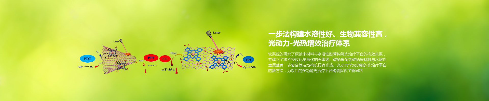
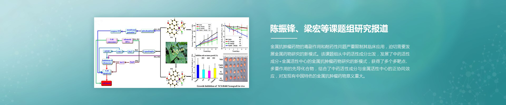
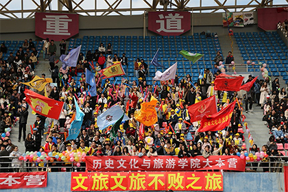
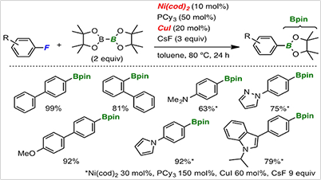
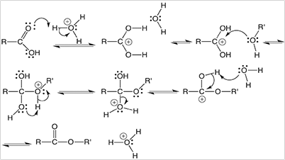
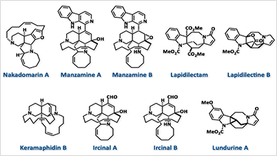

陈华
课题组
Chen's Group
主页
组内成员
研究领域
研究成果
组内动态
组内活动
加入我们
English


研究领域
光功能材料合成与应用
光功能材料（optical function materials）指在外场（电、光、磁、热、声、力等）作用下，利用材料本身光学性质（如折射率或感应电极化）发生变化的原理，去实现对入射光信号的探测、调制以及能量或频率转换作用的光学材料的统称。
分子探针与生物成像
分子探针是指能精准回答生物医学问题的功能性物质。分子探针是实现分子成像的先决条件和核心技术。分子探针种类繁多，根据成像设备的不同，分子探针分为光学、核医学、磁学、声学、光声等不同种类。
组内新闻
【喜报】我校学子在2018年全国高校经济学综合博弈实验大赛总决赛中获得佳绩
共享图书平台蹭了热度还要实惠

【直击校运会】第四十九届校运会精彩图片锦集——各学院大本营
查看更多
研究成果

Single near-infrared fluorescent probe with high and low sensitivity sites for sensing......

Recent progress in the fluorescent probes for specific imaging of small molecular......

Single near-infrared fluorescent probe with high and low sensitivity sites for sensing......
查看更多